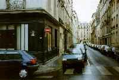
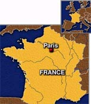
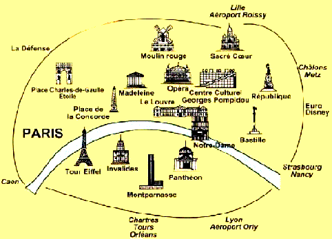
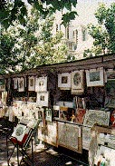
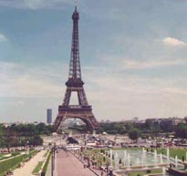
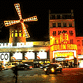
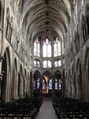

| LevSelector.com |
PARIS
first-hand
impressions after 1 weekend in Paris (October 2000).
| 
All buildings in central Paris are made in the same manner (Houssmann style with simple facades, small balconies and mansards). |
•
travel.org/france.html
- Welcome to FRANCE
France is a wonderful place. I want to come there again and spend more time. Probably to rent a car for couple of weeks and drive from North to South. Central Paris is just a big museum. French generate more than 30% of their National Income from tourists. There are approx. 60 mln people living in France - and there are more than 60 mln tourists visiting France every year. And, of course, most of the tourists come to Paris. Thus in Central Paris you see ONLY tourists and people serving them. |

France and Paris |
| Central (old)
Paris is surrounded by big, new Paris - approx. 12 mln people living in
normal modern buildings.
• www.paris.org/Maps
- maps
Really striking in Paris was to meet so many familiar names of streets and places. Pigalle, Montmartre, Notre-Dame, Palais Royal, The Louvre, etc. Names which I've known from my childhood from reading books by Alexander Dumas, Victor Hugo, and others. Today they are the names of subway stations. |
 |
| 
Bookseller's Stalls |
I found the nature (trees, grass)
very similar to Russian (I am from Russia). And, after so many years thinking
about going to Paris, I found that Paris is not that far - just several
hours away.
If you've been to Europe - you will not find anything unusual. People are people everywhere. Wearing the same clothing, using the same computers, riding the same Chinese scooters. |
| Food in France is much better than
in America - this is for sure. Coffee with milk is excellent. Wines, of
course. Any meal, even a simple salad, is a piece of art. People like to
talk about food, to take time eating and enjoying spending time during
the meal. Fast food is not common. At the same time most of people
are really thin. I haven't noticed fat people in France (although in USA
they are quite common).
Another thing which was unusual for
us - the size of cars. In USA we've got many big cars (like Lincoln
Town Car) and many SUV (Jeeps). In Paris all cars are very small
(micro, not mini). SUVs or limousines don't exist (we haven't seen
them in 2 days we've spent there).
|
|
Garik Saakian mobil phone (33)609-57-27-80 |
On advice
of a friend we used personal services of a Russian guide. He lives
in Paris and his name is Garik Saakian. Look at his picture on the left.
I made this picture of him near the Louvre. Garik stands in front of his
car. It is a nice comfortable van in which he was driving us around.
His services happened to be very good and pricing very reasonable - next time I will call him again. He made hotel reservations (excellent choice), met us at the airport, helped us to settle, showed places to eat and shop, gave us a 5 hour tour of Paris driving us around the town and showing all the famous places. He is very intelligent and knows France and its history very well - which makes conversations with him really educational and interesting. |
 |
| 
Bal du Moulin Rouge Eifel Tour |
Notre-Dame |

Notre-Dame - inside |
| Useful links | home - top of the page - |
• www.visitparis.com/
- good site
• www.paris-anglo.com/
- good site about Tourism in Paris
• www.adp.fr/
- Aéroport de Paris website
• www.airfrance.com/
• www.france.com/travel/hotels/PHG.html-
select hotel in Paris
• www.webscapades.com/france/paris/metro.htm
- metro (subway), hotels, etc.
• Paris
(many stations not shown; Osamu Abe; original?)
• Paris
(interactive map of François Vaillant)
• www.reed.edu/~reyn/transport.html
- Subways - all over the world - by Robert Reynolds
• Paris
1998 World Cup visitors' guide (thanks to Bernard Hanquez for providing
the scanned map)
• Paris
1998 World Cup visitors' guide to reaching Stade de France (download of
Paris Tourisme map)
• Paris
1998 World Cup visitors' guide to reaching Parc des Princes (download of
Paris Tourisme map)
• Paris
Meteor line (thanks to Bernard Hanquez for providing the scanned map)
• Paris
Meteor line (14) download from RATP official posting (thanks to Bernard
Hanquez for update information)
• Paris
in 1940 (thanks to Bernard Hanquez for providing a scanned copy of this
wonderful map; the reverse side and some comments by Hanquez also appear
in the "scanned items" section accessible through the menu above)
{kind=link}
{kind=link}
{kind=link}
{kind=link}
{kind=link}
{kind=link}
{kind=link}
{kind=link}
{kind=link}